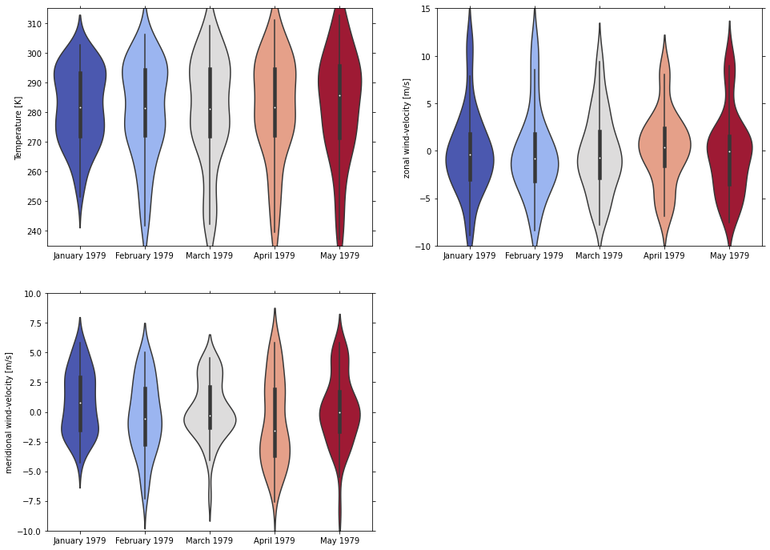

Note
This example requires the demo.nc file.
Violin plot demo
This example shows you how to make a violin plot using the psyplot.project.ProjectPlotter.violinplot method.
[1]:
import psyplot.project as psy
[2]:
axes = iter(psy.multiple_subplots(2, 2, n=3))
for var in ['t2m', 'u', 'v']:
psy.plot.violinplot(
'demo.nc', # netCDF file storing the data
name=var, # one plot for each variable
t=range(5), # one violin plot for each time step
z=0, x=0, # choose latitude and longitude as dimensions
ylabel="{desc}", # use the longname and units on the y-axis
ax=next(axes),
color='coolwarm', legend=False,
xticklabels='%B %Y' # choose xaxis labels to use month and year info,
)

[3]:
psy.close('all')